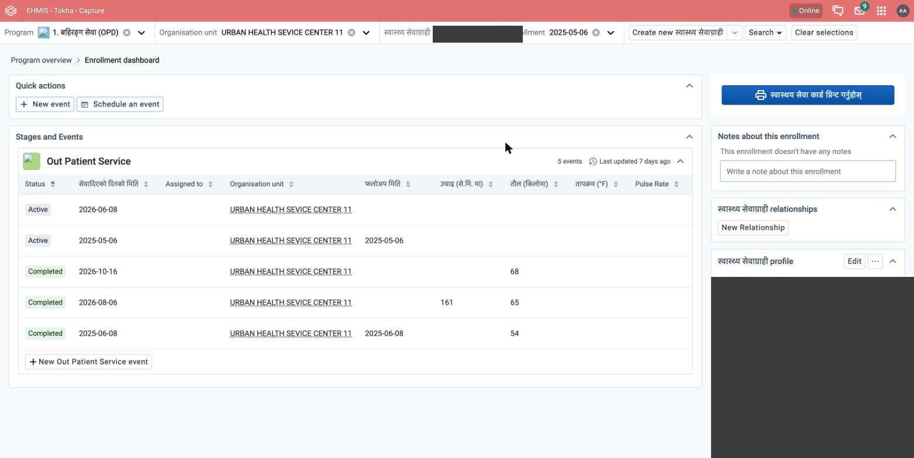
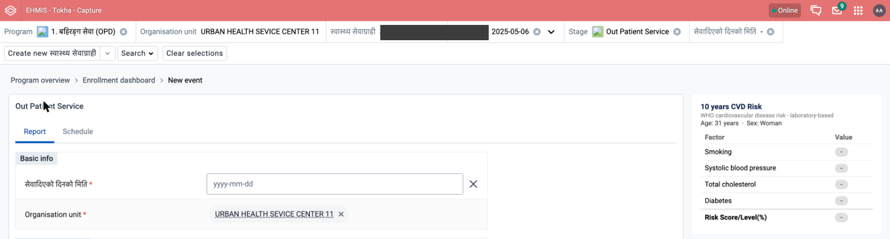
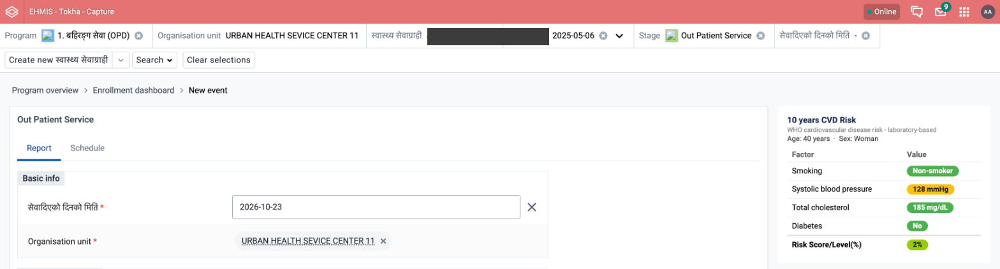
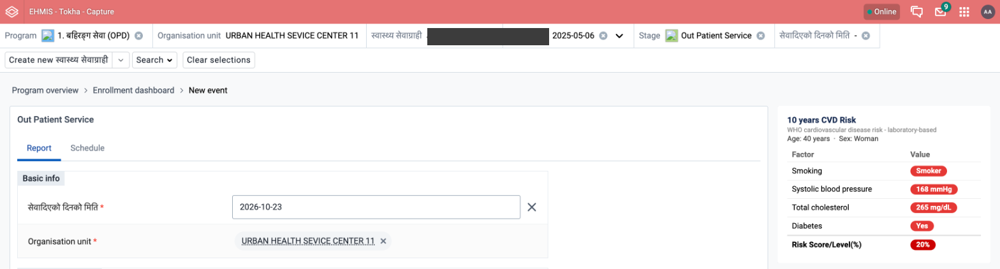

A step-by-step guide to using the automatic 10-year cardiovascular disease (CVD) risk calculator built into the Out Patient Service form in Capture.
When you open an Out Patient Service visit for a patient in Capture, a panel titled "10 years CVD Risk" appears on the right-hand side of the screen. It automatically:
Open the patient's enrollment in Capture, as usual.
Click New event (or open an existing visit you're editing) under Out Patient Service.
Look to the right of the form. The "10 years CVD Risk" panel is there from the moment the page loads.

When a new visit opens, the panel starts empty — every row shows a dash (-) because nothing has been entered yet.

Enter the visit date as usual.
Tick "मेयर दिर्घायु कार्यक्रम" (or select the NCD service type) to reveal the clinical fields: smoking, blood pressure, cholesterol, and diabetes.
Fill in each field exactly as you normally would:
As each field is filled in, watch the panel on the right — it updates automatically, row by row, with no action needed from you.

Each row shows one factor, its value, and a color badge showing whether it's in a normal, borderline, or high range:
| Badge color | Meaning |
|---|---|
| Normal | The value is within the normal clinical range. |
| Borderline | The value is elevated — worth noting, not yet high-risk on its own. |
| High | The value is outside the normal range and contributes to higher risk. |
| - | Not entered yet, or could not be found on this visit. |
The final row, Risk Score/Level(%), is the overall 10-year cardiovascular risk estimate. Its color follows the official WHO chart's own legend:
| Risk band | Color |
|---|---|
| Under 5% | <5% |
| 5% to under 10% | 5–10% |
| 10% to under 20% | 10–20% |
| 20% to under 30% | 20–30% |
| 30% or more | ≥30% |
An example with several factors elevated, showing how the panel looks for a higher-risk patient:

There is no separate "Save risk" button and no separate risk-assessment form — the score travels with the rest of the visit's data.
If a factor hasn't been entered, its row simply shows a dash (-). The tool never guesses or fills in a value on its own.